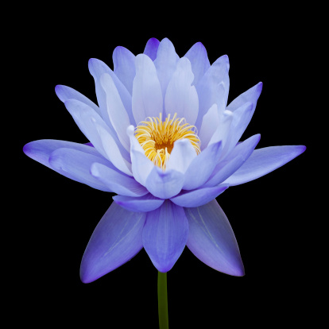
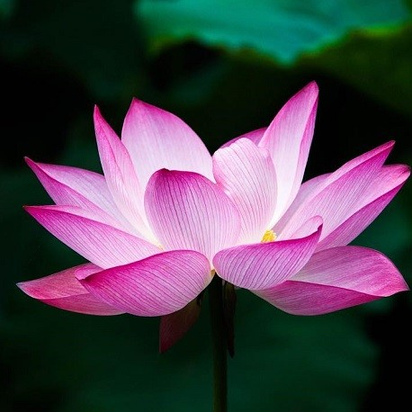
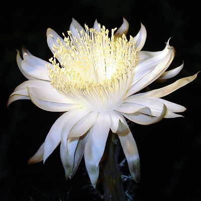
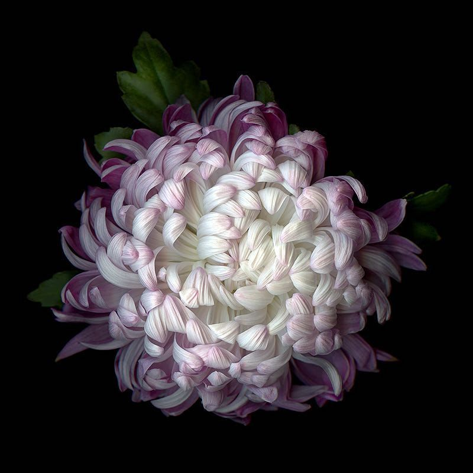

THE ANIMALS AND PLANTS
From the plethora of animals and fauna that can be found at Dehiwala Zoo, listed below are a few of the most popular amongst it's visitors.
From the plethora of animals and fauna that can be found at Dehiwala Zoo, listed below are a few of the most popular amongst it's visitors.
The Sri Lankan subspecies of Asian elephants is the largest and darkest, with spots of discoloration on its ears, forehead, trunk, and abdomen. These elephants were once found all over the island at the bottom of India's southern tip, but as development activities clear forests and obstruct their ancient migratory routes, they are being steered into smaller areas.
The majestic peacock is a bird endemic to Sri Lanka, and its distinctive cry can be heard in the jungles. They are remarkably quiet by nature for such colorful animals, so the best place to find one is within the borders of the various national parks, which are hidden from the constant hustle and bustle of Sri Lankan life.
The Sri Lankan leopard is without question a major draw for local and international nature lovers. The leopard has a faded gold coat with black stripes and a tail that is more than half the length of its body as measured from head to tail. The males are around 30% bigger than the females and weigh about 170 pounds. It is known to be one of the world's largest subfamilies of leopard.
| Name | Image | Scientific Name | Found In |
|---|---|---|---|
| Blue Water Lily |  | Nymphaea Caerulea | Ponds, wetlands, slow streams |
| Sacred Lotus |  | Nelumbo Nucifera | Deltas, slow streams |
| Queen of the Night |  | Epiphyllum oxypetalum | Jungles |
| Chrysanthemum |  | Dendranthema Grandiflora | Well draining soil |
| These plants bloom in various seasons. | |||